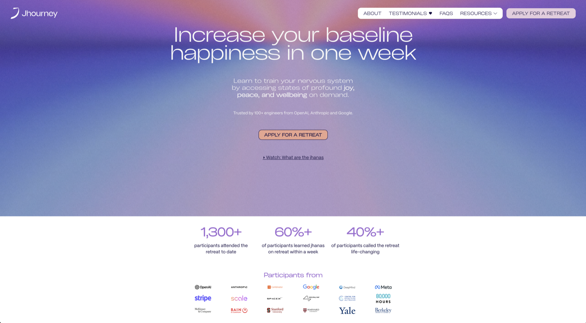

Thoughts on AI: March 2026
Published Last edited
Unstable Tweet Equilibria #
Almost certainly, every AI lab finetuned their models on social media datasets, training them toward posts that got high engagement. AI now writes tweets that would have played very well in 2024. But everyone knows what an LLM sounds like, and a post with too many em dashes is an instant turnoff.
The researchers at OpenAI will do another round of Twitter finetuning on data from 2026. Expect AI’s new prose to match that of today’s most popular humans. Em dashes will become a hallmark of 2025 LLMs. Opus 5 will use semicolons instead; I will change my style to avoid writing like a bot. The cycles of fashion will accelerate.
Already many humans prefer Claude’s prose to their own, and let LLMs edit or fully write most of what they produce.[1] Once everyone (who matters) does this, some meta Turing Test will have been passed.
AI Productivity Psychosis #
Status symbols die when they become cheap. A thin watch is meaningless in the age of quartz timekeepers. Blue used to color only the Virgin Mary’s coat, now it colors my socks.
A good landing page used to show that a company was serious and had good engineers. But in 2026:

Jhourney is a serious business and I’m tempted to go on one of their retreats. But c’mon, you gotta chuckle at this.
I couldn’t tell you how many people I’ve met at OpenClaw events who have blazed business ideas, and are convinced that their project is serious because they have a landing page that looks legit. It’s the 2026 version of a pinstripe suit and nice business cards. These people have only convinced themselves.
I see the same pattern around automation and ‘building an agent.’ Your AI can autonomously write code and post blogs and email customers, which means you’re this close to having an autonomous business.
You could cynically claim that we’re only seeing a trend continue here. Biz dev departments are obviously doing real work; how else would they have made such professional slides? HR has large meetings with agendas. Security has clear policies and writes long reports before allowing new software. Landing pages are making the same transition that slides, meetings, and spreadsheets have already finished: from a useful tool to a symbol of earnestness.
ChatGPT Loves Cliffhangers #
A behavior I’ve noticed recently: Chat ends half of its responses with “I could also say more about x, y, or z.” A real example I got recently:
If useful, I can also explain:
how he originally got big on X
the structure of his Spaces (they’re unusually organized)
why some VCs and founders use his Spaces for distribution.
These sentences sound like BuzzFeed headlines circa 2014. OpenAI rewarded the models too much for getting follow-up questions.
Notes #
Claude certainly checks my work for typos. Writing that I don’t want or expect any human to read, like a reflection after an HR training or a corporate blog post for SEO, I will happily let AI write. But everything I publish in my name is my own prose (for now at least). ↩︎